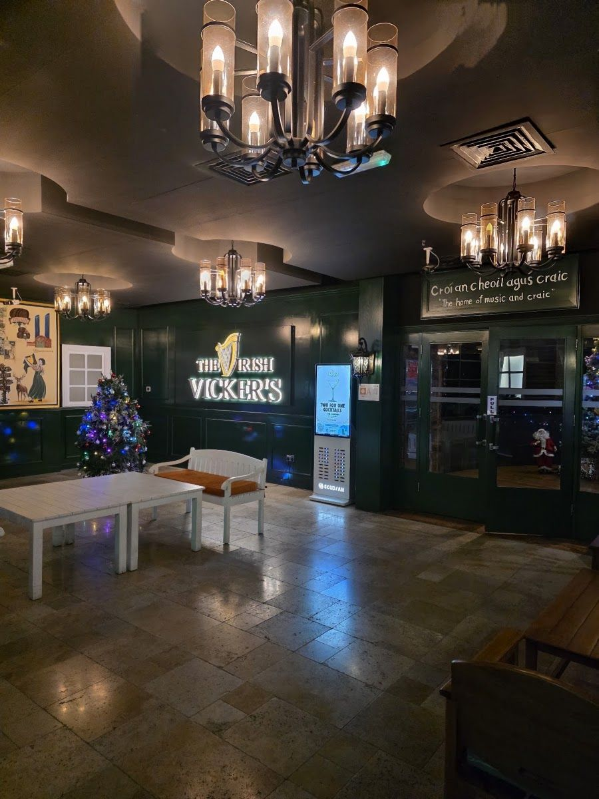

Our story
Croí an cheoil agus craic: the home of music and craic, at Al Raha Beach.

Croí an cheoil agus craic
The sign over the inside door says it in Irish: “the home of music and craic”. It's a pretty good summary. The Irish Vicker's Al Raha sits next door to Al Raha Beach Hotel, with the bar and the stage inside and a beer garden out on the grass.
Craic is the Irish word for a good time: good company, good music and good conversation, usually over a good pint. That's the whole idea. Joe Job runs the quiz on Thursdays, the band plays on Fridays, brunch takes all of Saturday afternoon, and the TVs show whatever game you came in for.
We're part of a family of three Irish Vicker's in the UAE: this one at Al Raha Beach, the super pub at the World Trade Center in the city, and the local in Al Ain.
Meet the crew
The people guests mention by name.
Sample profiles, photos and bios to be confirmed with the teamThe family
Three Irish Vicker's, each with its own crowd.
Save your seat
Send us a WhatsApp and the team will confirm your table. Big group? Tell us and we'll set it up.